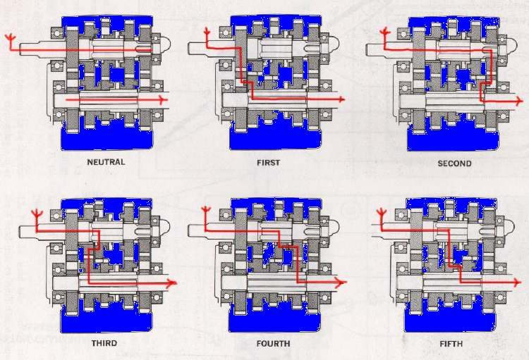

The gearbox sits in the back of the crankcase, behind the crankshaft, sharing the engine oil. You change gear with the pedal on the left.
What it does
Two shafts carry pairs of gears that are always in mesh. The gear pedal turns a shift drum, which moves forks that slide gears sideways until their dogs lock one pair to its shaft. Only that pair carries the power. Low gears give force for pulling away and climbing; high gears give speed. Most commuter bikes shift 1-N-2-3-4-5. See the drum, forks and dogs move in Under the Engine, and gear ratios explained in the crash course.
Signs it is worn or failing
- Hard to change gear: Hard gear change. Check the clutch first.
- Pops out of gear under load: Jumps out of gear. Do not ride hard.
- Finds neutral between gears: False neutral.
- Whine that changes with gear: Gearbox whine.
- Metal flakes on the drain plug: Metal in the oil.
When to replace it
Many shifting faults come from clutch drag, a loose gear pedal or the outside shift linkage, which are cheap to fix. Rounded dogs, broken teeth or bent forks need the crankcase split: a workshop job. See Gearbox assessment.
What to match when buying
- Gears and forks must match the model and year exactly. Replace worn dogs in matching pairs.
- Use the engine oil grade in your manual; the gearbox shares it.
Fitting notes
- Rider check: Check gear shifting.
- Change gear firmly and fully, with the clutch pulled. Half-shifts round off the dogs.
- Gearbox bearings run in an oil bath and rarely wear out. If they turn smoothly and show no damage, they can usually stay, unless the engine is a high-value one.
- Take shafts and gears out gently, as a unit where possible, and lay the parts in order (an egg crate helps). Refit each part in the same position and the same way round.
- On engines with a crankcase split along the horizontal plane, a gear can be changed without removing the cylinder head.